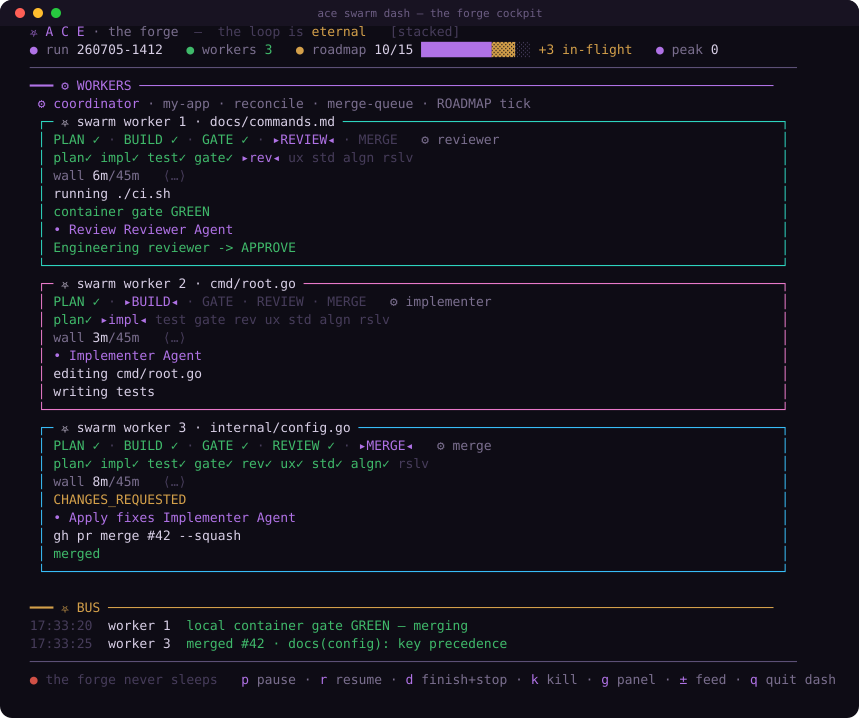

the cohort, in parallel — ace swarm dash

Three feature-streams running at once — each in its own git worktree, taking one ROADMAP item,
self-merging to main on a green local gate. Every box shows that worker's live
pipeline (PLAN·BUILD·GATE·REVIEW·MERGE, current stage lit), the agents strip (which of
the 9 subagents have run · is running · pending), its wall/budget, and its streaming loop feed. The
BUS carries cross-worker milestones; the top bar's roadmap meter shows done · in-flight ·
remaining live.
Watch your own run in motion: ace swarm dash (or record it —
asciinema rec -c 'ace swarm dash' swarm.cast). Full guide:
docs/swarm.md.